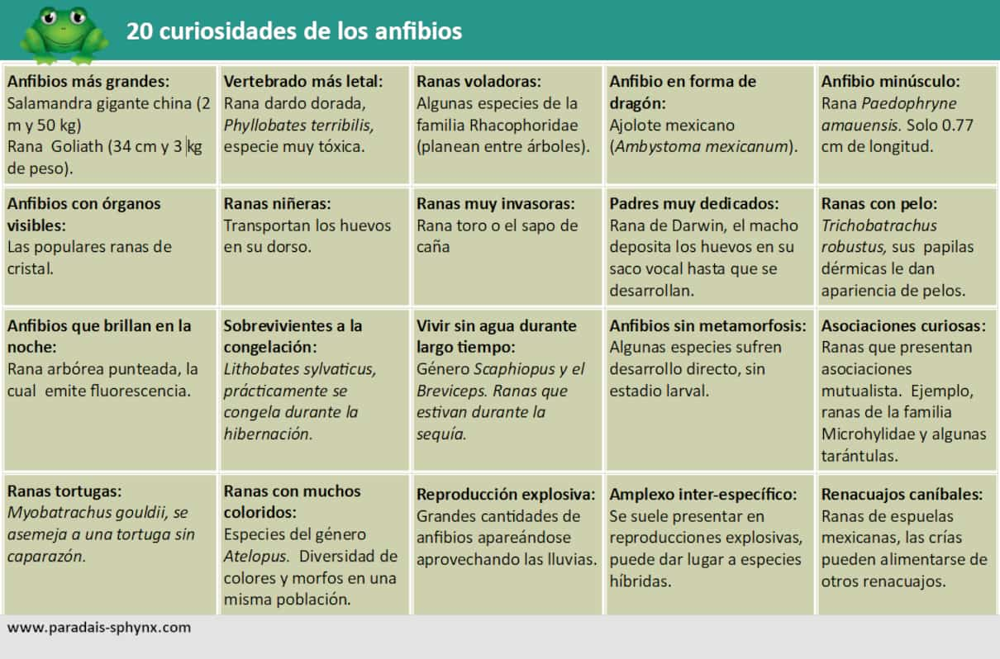

Información
En este apartado, nos vamos a centrar en:
- ¿Qué es un anfibio?
- Características.
- Ejemplos.
- Curiosidades.
Los anfibios son una clase de animales vertebrados con respiración branquial durante la fase larvaria y pulmonar al alcanzar el estado adulto. A diferencia del resto de vertebrados, se distinguen por sufrir una transformación durante su desarrollo. (Este cambio puede ser largo y se denomina metamorfosis).
